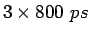
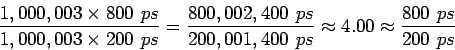

พิจารณาคำสั่งใน MIPS แปดคำสั่ง ได้แก่ load word (lw), store word (sw), add (add), subtract (sub), and (and), or (or), set-less-than (slt), and branch-on-equal (beq)
จงเปรียบเทียบเวลาเฉลี่ยของการประมวลผลคำสั่งระหว่างโปรเซสเซอร์แบบวงรอบเดียวกับแบบไพพ์ลายน์ โดยสมมุติให้การทำงานของส่วนประกอบต่างๆ ใช้เวลาดังนี้ Memory Access 200 ps, ALU Operation 200 ps, และ Register File Read/Write 100 ps
รูป 6.2 แสดงเวลาที่ใช้ในการประมวลผลทั้งแปดคำสั่ง โดยโปรเซสเซอร์ที่ทำงานวงรอบเดียวจะมีวงรอบของสัญญาณนาฬิกาเท่ากับเวลาในการประมวลผลคำสั่งที่นานที่สุด ในที่นี้คือคำสั่ง load ที่ใช้เวลาทั้งหมด 800 ps รูป 6.3 แสดงการทำงานที่โปรเซสเซอร์วงรอบเดียวที่ใช้เวลาการประมวลผลทั้งสิ้น  หรือ 2400 ps ถึงแม้ว่าบางคำสั่งจะสามารถประมวลผลได้ใน 500 ps, 600 ps, หรือ 700 ps สัญญาณนาฬิกายังต้องครอบคลุม 800 ps ในการทำงาน
ทุกสเตทของไพพ์ลายน์จะทำงานในหนึ่งวงรอบสัญญาณนาฬิกา โดยวงรอบสัญญาณนาฬิกาในที่นี้จะเท่ากับการทำงานของส่วนประกอบที่ช้าที่สุด ในที่นี้คือ 200 ps ถึงแม้ว่าการใช้งาน Register File จะใช้เวลาเพียง 100 psก็ตาม โปรเซสเซอร์แบบไพพ์ลายน์สามารถประมวลผลสามคำสั่งเสร็จสิ้นใน 1400 ps
ในกรณีที่ทุกสเตทของไพพ์ลายน์มีปริมาณงานเท่ากัน เราสามารถคำนวณความเร็วที่เพิ่มขึ้นจาก
| (6.1) |
ในสภาวะอุดมคติ ความเร็วที่เพิ่มขึ้นของโปรเซสเซอร์แบบไพพ์ลายน์จะเท่ากับจำนวนสเตทของไพพ์ลายน์ ซึ่งในกรณีนี้เท่ากับห้าสเตท
จากตัวอย่างขั้นต้น วงรอบนาฬิการของโปรเซสเซอร์ที่ทำงานในวงรอบเดียวเท่ากับ 800 ps ถ้าโปรเซสเซอร์แบบไพพ์ลายน์มี 5 สเตท วงรอบนาฬิกาจะต้องมีค่าเท่ากับ 160 ps แต่เนื่องจากแต่ละสเตทไม่สมดุล (สเตท Register File Access ใช้เวลาน้อยกว่า) จึงได้ค่าอัตราการเพิ่มขึ้นของความเร็วต่ำกว่าการทำงานในสภาวะอุดมคติ
ถ้าสมมุติให้โปรเซสเซอร์ทำงานทั้งสิ้น 1,000,003 คำสั่ง จะสามารถคำนวณความเร็วที่เพิ่มขึ้นได้เท่ากับ
|  | (6.2) |
ซึ่งค่าที่ได้มีความไกล้เคียงกับสภาวะอุดมคติมากขึ้น
โปรเซสเซอร์แบบไพพ์ลายน์เพิ่มอัตราความสำเร็จของงาน ซึ่งมิได้ลดเวลาการทำงานของแต่ละคำสั่งแต้อย่างใด